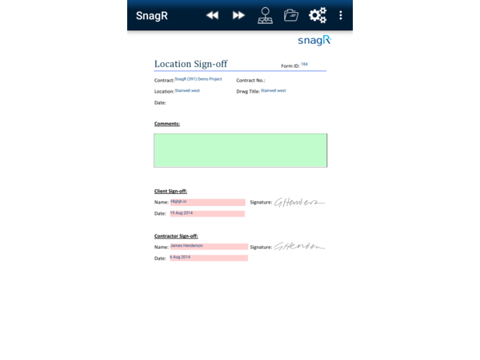

Capture
Found a defect? Simply take a picture and plot on the map. We will take care of the rest.
Progress
We automate workflow to responsible parties. Keep the process going without any lead time for communication.
Digitalise
Digitalise all processes saves time and efforts from tedious data-entry after inspection on-site.

Customise
You can customise your company standard forms and integrate data on SnagR into your own back-end system.
Analyse
Gain valuable insights from analysis of your issues and inspections across stages and projects.
Create Value
Significant value is created by quality and safety assurance, timely project delivery and insightful analysis.